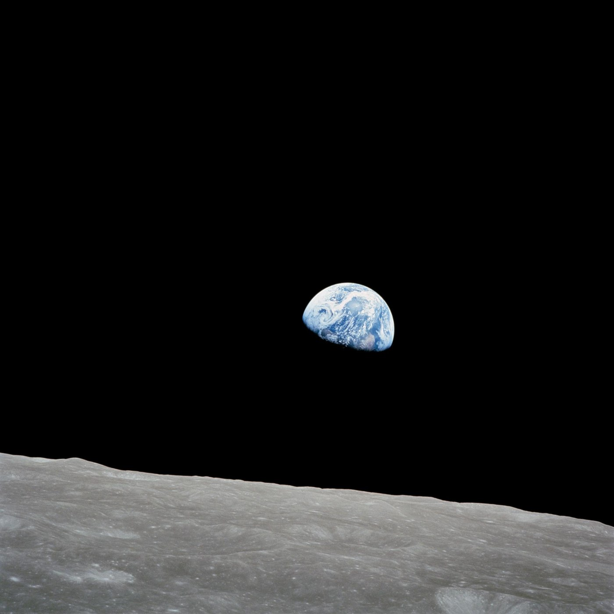

Tested on real NASA data: Inspiration4 crew blood tests (OSD-569).
Normal range: 4/4 fine Their own normal: 4/4 changed!
16/34
blood markers where your own range beats the "normal" one
found a NASA data error!
one row shifted by a column → fixed it, proved it, reported it to NASA ✓
blood draw on the ISS (NASA)
honest limits
4 people, a 3-day flight, no tests during flight. It supports the idea — it doesn't prove it.
math check: MCH = 13.2 ÷ 4.46 × 10 = 29.6 → it was sitting in the wrong column!
NASA OSDR OSD-569 · rerun it: npm run proof6 / 7
Delay is delay 🌏
Near Warangal, some villages are hours from a doctor. Same clock, travel time instead of light time — with the daily check in Telugu and Hindi.
Ground Station
the flight surgeon's page — gets the signed message only after the real light time, rejects replays, signs the reply
open + tested
MIT licence · 149 automated tests · no server · every rule cited

Earthrise (NASA)
try it now ➜ ibeastmanish.github.io/ASCLEPIUS code ➜ github.com/ibeastmanish/ASCLEPIUS
Medicine for when Earth is too far away.
thank you! ✦ Tula Manish
Decision support, not a medical device. AI coding assistants helped write and test code and text; the author reviewed the health rules. Pre-event work disclosed with the Local Lead's approval.
Team ASCLEPIUS · Tula Manish · Warangal, India7 / 7
 Mars ✦ where the doctor isn't
Mars ✦ where the doctor isn't home (11 min away)
home (11 min away)